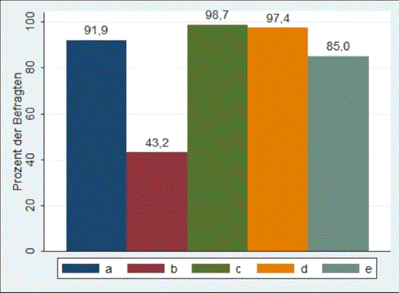
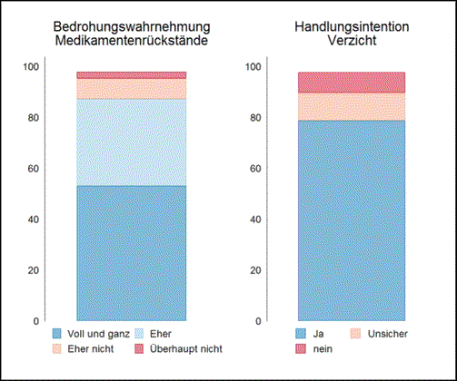

Heidelberg, den 21. 6. 2017
Im Seminar ‚Die Regulierung von Umweltrisiken‘ unter der Leitung von Prof. Dr. Jale Tosun hat die Seminargruppe im Rahmen des Effect-Net-Projektes eine Pilotumfrage zur Qualität von Oberflächengewässern erstellt.
Die Befragten mussten zunächst allgemeine Fragen zum Thema Wasser beantworten. Anschließend wurden Einstellungen und Verhalten der Menschen sowie die Einschätzung von Wasserbelastungen erfragt. Ebenso fanden spezifische Fragen des Effect-Net-Projekts Berücksichtigung.
Insgesamt gelang es der Rekrutierungsgruppe „Email“ 108 komplette Survey-Antworten zu erhalten. Davon wurden 53 über „Facebook“ rekrutiert, 99 weitere über Prof. Dr. Braunbeck und Prof. Dr. Triebskorn angeworben.
Die sozio-demografischen Merkmale der Befragten verteilten sich wie folgt:
• Alter: Mittelw. 30 Jahre; Stabw. 12 Jahre
• Geschlecht: 58,1% weiblich
• höchster Bildungsstand: 40,3% Abitur, 53,7% (Fach-)Hochschulabschluss
• Politische Einstellung auf einer Skala von 1 (links) bis 10 (rechts): Mittelw. 4,0; Stabw. 1,4
In der Befragung wurden die Teilnehmenden direkt gefragt, wie sie ihr eigenes Wissen zur Qualität von Oberflächengewässern einschätzen. Der Großteil der Befragten schätzt ihr eigenes Wissen als gering oder bestenfalls durchschnittlich an. Nur drei Befragte gaben an, Experten-Wissen zu besitzen.
Grafik Selbsteinschätzung
Das tatsächliche Wissen zur Wasserqualität in Deutschland wurde über folgendes Wissensquiz abgefragt (die richtigen Antworten sind jeweils in Klammern hinter den Aussagen angegeben):
Bitte antworten Sie, ob die folgenden Aussagen richtig oder falsch sind.
a) Die Kläranlage in meiner Gemeinde kann alle Verunreinigungen aus dem Wasser filtern. (falsch)
b) In Deutschland gibt es einen gesetzlich festgelegten Grenzwert für alle durch den Menschen ins Wasser eingetragene Fremdstoffe. (falsch)
c) Es ist nur gefährlich, verunreinigtes Wasser zu trinken, nicht aber darin zu baden. (falsch)
d) Unser Abwasser wirkt sich auch auf die Qualität unserer Oberflächengewässer aus. (richtig)
e) Unser Abwasser wirkt sich auch auf unser Trinkwasser aus. (richtig)
Es zeigt sich, dass alle Fragen bis auf Frage b) von 85% der Befragten oder sogar mehr richtig beantwortet wurden. Dass es gefährlich ist, in verunreinigtem Wasser zu baden und dass sich Abwasser auch auf die Qualität der Oberflächengewässer auswirkt, wussten fast alle Befragte. Dass es in Deutschland nicht für alle Fremdstoffe im Wasser einen gesetzlich festgelegten Grenzwert gibt, wussten jedoch nur 43,2%.

Grafik Wissen
Theorie: Welche Faktoren wirken sich auf die Bereitschaft von Individuen aus, ihren eigenen Beitrag zur Mikroverunreinigung von Oberflächengewässern zu reduzieren? Theoretische Erwartungen dazu lassen sich aus dem Integrierten Handlungsmodell von Thomas Martens und Jürgen Rost (1998; 2008) ableiten. Danach etabliert ein Individuum mit höherer Wahrscheinlichkeit eine konkrete Handlungsintention, wenn es eine Umweltsituation als bedrohlich wahrnimmt.

Grafik Theorie
Empirie: Die Bedrohungswahrnehmung wurde anhand einer Kombination von drei Items gemessen, die abfragten, inwiefern Medikamentenrückstände in Gewässern ein besonders ernsthaftes Problem darstellen und ob Umweltprobleme oder Wasserverschmutzung einer Person Sorgen bereiten. Exemplarisch zeigt die abgebildete Grafik die Verteilung der Antworten für die Frage nach den Medikamentenrückständen. Der Großteil der befragten Personen stimmte der Aussage zu, dass es sich hierbei um ein ernsthaftes Problem handelt. Die beiden anderen Items wiesen ähnliche Verteilungen auf.
Insgesamt gesehen zeigte sich eine weit verbreite Bedrohungswahrnehmung der Mikroverunreinigung der Oberflächengewässer.
Bei der Frage, ob sich die Probanden vorstellen könnten, auf bestimmte Stoffe komplett zu verzichten, bejahte ebenfalls mit ca. 80 Prozent der Großteil eine solche Handlungsbereitschaft.
Der Einfluss der Bedrohungswahrnehmung auf Handlungsintentionen wurde anhand einfacher Zusammenhangsmaße überprüft. Die Ergebnisse deuten nur auf einen leichten Zusammenhang hin (?2-Test signifikant auf dem 10 Prozent-Niveau; Cramér‘s V gleich 0,293).
Theorie: Individuelles Umwelthandeln wird seit den Arbeiten von Maloney und Ward 1973 als Facette des Umweltbewusstseins definiert und umfasst jede bewusst auf Grundlage ökologischer Überzeugungen getätigte, umweltförderliche Handlung. Es gilt hierbei zu unterscheiden zwischen Verhaltensänderungen und -einschränkungen, beispielsweise in Fragen von Konsum und Mobilität, und zusätzlichem umweltpolitischen Engagement wie der Unterstützung von Umweltverbänden.
Gemäß dem Modell des Homo Oeconomicus aus der Rational Choice Theory besteht ein direkter Zusammenhang zwischen umweltfreundlichem Verhalten und den jeweiligen Mehrkosten. Für eine Messung von individuellem Umwelthandeln in Umfragen bieten sich darum Frageformulierungen an, die auf die Übernahmebereitschaft von Mehrkosten abzielen.
Grafik Verzichtsbereitschaft
Die Abbildung zur Verzichtsbereitschaft zeigt zwei Befunde:
1. Die Bereitschaft sich in seinem Verhalten für die Umwelt einzuschränken sinkt mit steigendem Alter.
2. Die Verantwortung für Umweltverschmutzung sieht man nicht bei sich, so ist man nicht bereit zu verzichten. Zwar ist gerade Letzteres nichts Neues, allerdings unter-streicht dies, dass man Konsumenten nur zu umweltbewusstem Verhalten bringt, wenn der Einfluss des eigenen Verhaltens auf die Umwelt klar hervortritt.
Umweltvertrauen determiniert durch Wissen?
Vertrauen spielt im Umweltbereich eine wichtige Rolle, wie verschiedene sozialwissenschaftliche Theorien zeigen. Einer der bekanntesten Wissenschaftler in diesem Kontext, George Simmel, beschrieb Vertrauen als „mittlere[n] Zustand zwischen Wissen und Nichtwissen“ (Simmel 1968: 263). So kam er zu der Schlussfolgerung: „Der völlig Wissende braucht nicht zu vertrauen, der völlig Nichtwissende kann vernünftigerweise nicht einmal vertrauen […] (Simmel 1968: 263).
Doch ist diese Annahme richtig? Vertrauen Personen mit einem hohen oder niedrigen Wissenstand nicht den Ratschlägen von öffentlichen Institutionen/Organisationen?
Da es sich bei Wissen um ein mehrdimensionales Konzept handelt, wurden für die Analyse der Effect-Net-Daten verschiedene Formen von Wissen berücksichtigt:
1. der Bildungsstand der Personen (Allgemeinwissen),
2. Selbsteinschätzung der Personen über ihr Wissen,
3. der tatsächliche Wissenstand der Personen.
Die Ergebnisse der Analyse zeigen, dass Befragte mit hohem Bildungsstand mit einer geringeren Wahrscheinlichkeit dem Rat des Umweltverbands, kein Leitungswasser zu konsumieren, zustimmen und somit der Einschätzung des Umweltverbands weniger vertrauen als Befragte mit einem niedrigen Bildungsstand. Dasselbe gilt für Befragte, die ihren Wissenstand in Bezug auf die Qualität von Oberflächengewässern als hoch einschätzen. Für die dritte Wissensvariable ergab sich ein gegenläufiger Effekt. Es muss jedoch festgehalten werden, dass die Ergebnisse nicht auf die Grundgesamtheit übertragen werden können, da die Irrtumswahrscheinlichkeiten mit 17,0; 11,4 und 57,3 Prozent deutlich zu hoch sind.
Soziales Vertrauen und Konfidenz zur Risikowahrnehmung von verschmutztem Trinkwasser
Nach Earle et al. (2010) konnte gezeigt werden, dass eine erfolgreiche Risikokommunikation von der Werteüberschneidung zwischen Individuum und Institution (soziales Vertrauen), als auch von den individuellen Erfahrungswerten (Konfidenz) abhängt. Dem Rat des Umweltverbands, kein Leitungswasser zu konsumie-ren, wird von Personen mit ähnlichen Werten (Umweltschutz & Nachhaltigkeit) mit einer vorhergesagten Wahrscheinlichkeit von 0,506 zugestimmt. Personen mit einer vorangegangenen Erkrankung durch verunreinigtes Trinkwasser stimmen dem Rat des Umweltverbands ebenso häufiger voll und ganz gut: hier liegt die vorhergesagte Wahrscheinlichkeit bei 0,490.


Das Projekt wird vom Land Baden-Württemberg im Rahmen des Wassernetzwerkes gefördert.
Laufzeit: 2016 bis 2021
Prof. Dr. Thomas Braunbeck
Aquatische Ökologie und Toxikologie
COS - Centre for Organismal Studies
University of Heidelberg
Im Neuenheimer Feld 504
D-69120 Heidelberg
braunbeck@uni-hd.de
Tel.: +49-(0)62 21-54 56 68